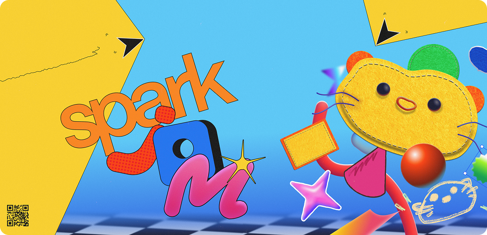

SparkJam was a Design Jam I branded, organized, and ran between May 11 - 23, 2026 across both Vancouver and Waterloo for 400+ students.
When it came to developing the design direction for the event, we centered on the idea of an explosion of unfiltered, passionate, and inspiring creation.
We took that concept of creation and filtered it across three different layers; creating seperation, harmony, and reducing overwhelming visual noise.
Nailing down the creation world was essential to working out the branding. We formed the foundation from old 3D modelling primatives, and then added various multidimensional materials on top.

For social media assets, we focused on creating a sense of unity, and enhancement through motion.